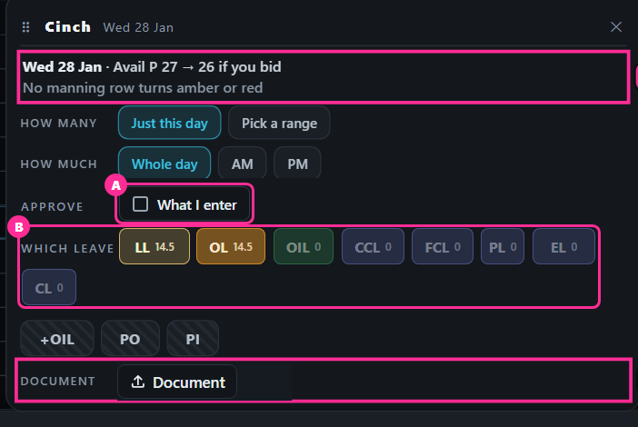
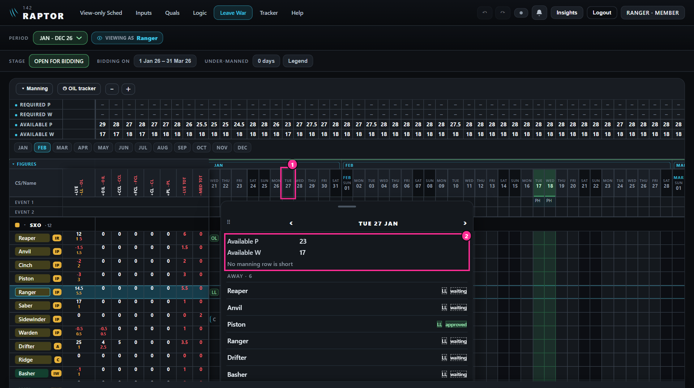

What the Leave War becomes
Your 22 points and your round 1 answers, all drawn into the real app. "Today" pictures are the app as it is; "proposed" pictures are the same real screen with the new parts drawn in, marked and numbered in pink. The sample squadron was set up through the app's own buttons, with the clock held at Thu 8 Jan. Your colleague's app is shown on made-up people, its squadron name replaced. Tap any picture to enlarge it. A second reviewer checked this plan against your rulings before you see it.
In one minute
- One grid, read at a glance. The year grid stays. A whole day's box fills its cell; a half day's box fills its half, the morning on top and the afternoon below.
- Your own leave first. "My leave" sits on the top of the page; tap a name for that person's leave by year; tap a date for that day.
- One list to decide. An Approvals list with its count; "Approve what I enter" for your own entries.
- Open dates instead of stages. Draft, bidding, closed and published go. You open months for bidding in one window; the rest of the year is closed to bids, and every request shows where it stands, live.
- Also: a document on every entry, a Management group, holidays by file, a list of events, and the bell telling a member every decision.
The new page


Round 2 · your answers
- 1 · A: the year grid stays.
- 3 · yes: Ack goes; the window decides with Approve · Refuse. And every document uses the app's one Document button, the upload arrow and "Document", as a medical input has it. (The window pictures further down still show the paper clip I drew; the build uses your button.)
- 4 · B, your way: rows keep their height; a whole day's box fills the cell and a half day's box fills its half, its letters smaller. Measured at your iPhone's size: a half's letters 6 points, a whole day's 8, as today.
- 2: asked again on cells drawn your way; your answer, E with your colours, is drawn below for you to confirm.
Round 3 · your answers
- 2 · F: your colours, as drawn. Local leave light amber, overseas leave deep amber, OIL / FO / HO green, other leave blue, a course lilac, overseas duty grey, medical rose. Filled is approved, hollow and dashed is waiting, grey and struck through is refused.
- 4b · A: two whole-day entries side by side, each the full height.
- 5 · open: the stages go. One "Open for bidding" window is the only switch: tap a month to open it, or hold and drag across several; a calendar icon on each stretch for exact days. Nothing is open until you open it. Once closed, the chip reads "Bidding closed", and a member who taps a day is told: "Bidding is closed. To change your leave, seek management's approval, then file it on the Inputs page. Your approved leave updates here by itself."
- 6 · B, in your words: closing stops only bidding on the Leave War. The Inputs page is never stopped; after management's verbal approval a member files or edits his leave there, and the Leave War follows.
- Your two points on the top row: "Viewing as" goes, and the period picker reads "View", on a desktop and a phone. Drawn in every picture below.
A fresh reader checked how I wrote these down. One correction worth knowing: I had written that "Viewing as" can go because your name shows at the top right. That is true on a desktop only; on a phone your name sits in the menu ("Signed in as"). The ruling now says so. Nothing else changed in meaning.


Four questions. Every picture has its top redrawn with your round 3 answers: the open dates where the stages were, the period picker labelled "View", no "Viewing as".
7Quick approve, or approve all for a period? your point 10
Your points, drawn: each request shows the person's own puck (pilot or WSO by colour, his CAT, a SANS man's purple edge) and its kind as the grid's coloured box; "LVE Bal" in place of "LVE after"; a document icon where one is attached, tap to review it; the dates are every month of the period you are viewing (Jan to Dec), months with nothing waiting greyed. And on the Inputs page the type filter can pick "All leave" or "All medical", so one list shows who has not attached his document.
Your question: is "lowest Avail P" taken at the time he applied, and are they in order of application? It is live, not frozen: the lowest figure on that request's days as the grid stands now. Every request not refused is already counted (a request lowers manning the moment it is placed), so it shows the day as it would be if everything waiting were approved. Approving changes nothing; refusing gives the man back. One correction to my first drawing: a WSO's request now shows "lowest Avail W", since, as the rows stand, it never moves Avail P. A SANS man is never counted in Avail P or W (he offers his days on the SANS calendar), so his request moves neither: I recommend his line shows "SANS · not in Avail" in place of a figure. On the order: my first drawing ran by leave date even though it said "oldest first". I recommend oldest request first, the order they applied. The app does not record when a request was made yet; the overhaul adds that ("placed by Static, 2 Jan").
Your question: will the lowest Avail P or W show amber or red, and if you rename the row, does the line follow? Today the grid turns an Avail P or W figure red where it is under that day's Required figure. The row has no amber of its own. So I recommend the line does the same: the figure red where it is under Required (A in the picture). The amber and red belong to your Manning rows, such as IP or SXO. Where one of those is amber or red on the request's days, the line names it in its colour (B), as the bid window does. And yes, renaming follows: the line uses the row's own name and counts whoever the row counts. If you rename Available P "Pilots w/o OCU" and leave OCU out, the line reads "lowest Pilots w/o OCU 21" at once (C). Nothing to set twice.

- A · no quick-approve switch; the list's dates choose a period, and "Approve all" approves what it shows; each line coloured as aboverecommended
That is "approve all for a selected period". The grid's drag-select stays. A switch that makes a tap approve is easy to leave on, and then a tap meant to open a cell approves it. - B · add the quick-approve switch as well.


8The balances list, and its name answered: A
Your answer, recorded: no second list; "Figures" becomes "Balances". And, as you asked, Balances is now a button you can see is clickable, like "Manning", with its ▸ when shut and ▾ when open.


9"Approve what I enter": where, and off each time? your point 5
Redrawn after your two points: the tick sat oddly on a row with no label, and the leave buttons now wear the leave colours (amber for LL and OL, green for OIL, blue for the rest; a button with nothing left dimmed, keeping its colour).
9a · where the tick sits
- A · a row of its own, labelled like the others: "APPROVE ☐ What I enter"recommended
It lines up with How many, How much and Which leave, and you set it just before you tap a leave. - B · in the window's title bar, beside ✕. The window is one row shorter, but the tick is far from the leave buttons it changes.
9b · off each time the window opens?
- A · off each timerecommended
So entering a member's request for him stays a normal waiting request unless you tick it. - B · it remembers your last choice.



10Where Approvals opens
With the stages gone, the second line holds the open dates, under-manned and Legend. Approvals is for admins only; a member never sees it.
- A · where "Viewing as" was: on the top line, after "+ New"recommended
The same place on a desktop and a phone. The second line is then the same for everyone, and nothing is squeezed on your phone. - B · first on the second line, beside the open dates. Fine on a desktop. On a phone that line has no room: Legend is pushed off the edge (last picture), so something else would have to move.


7A 9aA 9bA 10A (8 is answered), or with anything you want changed.After round 4.
11The day panel's rows stacked, one a line
- A · yesrecommended
Names in one column and figures in a second, as you asked for the bid window; a day not open for bidding says so on its first line. - B · in one row, as round 1 drew it.


12Management: a tick on Quals, or picked on the Leave War? your point 8
- A · a Management tick column on Quals, added as a group on the war and standing firstrecommended
Quals stays the one place a man's facts change, and the war's groups already come from Quals' columns. A man in Management still counts in his own seat. - B · a list of people picked on the war itself.


Built in from your points, nothing to answer
A person's leave, by year · points 7, 22


Placing leave · your round 1 answer 4, point 12


A document on every entry · point 12


Events, and holidays by file · point 16


Available P and W · point 15
Already built: tap "Available P" and its window chooses exactly what it counts (crew, CAT, holding, without). Only one line is new.


My readings, yours to strike
- A leave's document is opened by whoever can open the entry, as a medical one is today.
- A bid's document goes with it when it is approved, and stays when it is put back or refused.
- Documents stay in each browser, as medical ones do, until the shared database.
- Approvals is for admins; a member sees his own waiting requests in "My leave".
- The holiday sheet is a CSV file that opens in Excel, its columns in plain words (date, last date, name, short form).
- The holiday import sits on the Calendar window's Holidays list and writes the same record as the war's Event row; the events list is new, behind the war's ⚙.
New notifications, yours to strike
Your notifications list is written (point 12). It holds the 11 the bell sends today, your round 1 ruling, and these six I propose:
- P1 · the day before a leave starts with no document: Your leave · Mon 19 Jan · LL · no form attached yet
- P2 · an admin enters leave on a member's row, ticked approved: Your leave · Mon 9 Mar · LL added and approved · Saber
- P3 · you close dates while a member's request on them still waits: Your leave · Tue 10 Feb · LL waiting · bidding now closed
- P4 · months are opened for leave: Leave War · Apr – Jun open for leave · Saber
- P5 · a new request waits (to the admins): Approvals · Ranger · LL Mon 26 – Tue 27 Jan
P6 · if question 6 is yes, Inputs-page leave decided in Approvals tells him as a bid does.Struck: your answer to 6.